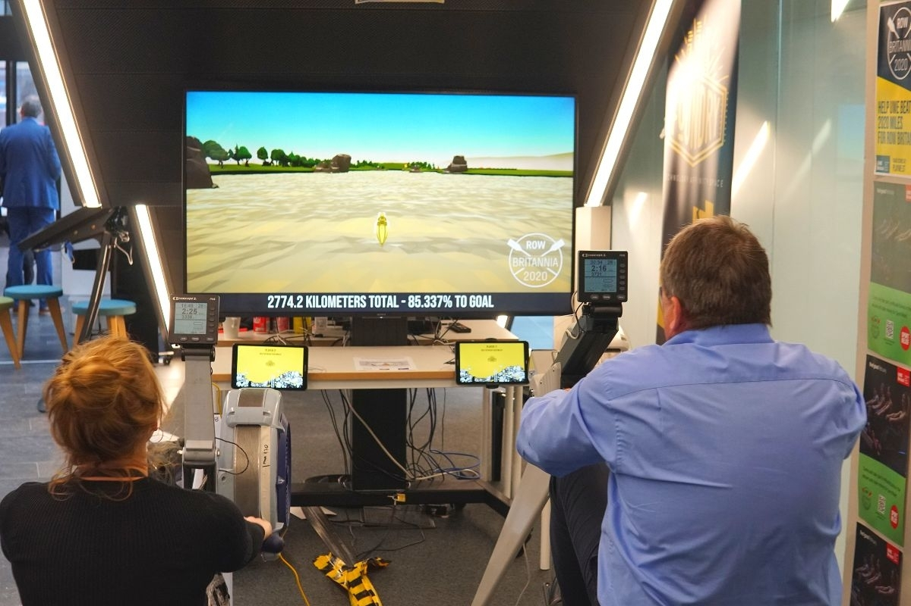
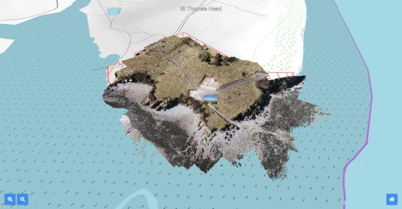
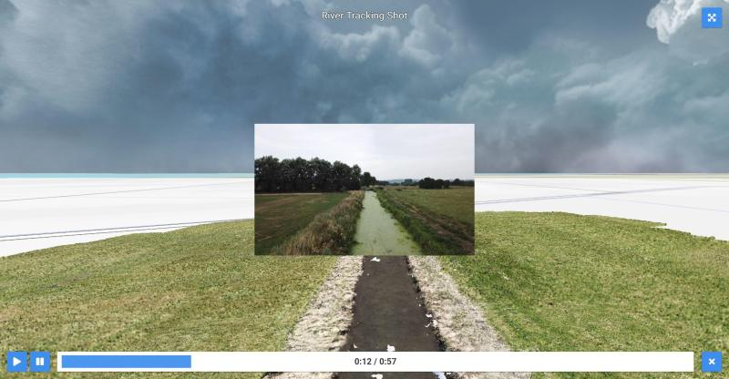

Microgestures
While working at Ultraleap I developed a number of feature demos for their hand tracking platform to showcase new functionality as it became available. This was an often challenging task, as the complex software and hardware stack we worked with was being built in parallel to any demo applications.
Ultraleap Hyperion introduced the concept of "Microgestures" - essentially a drive from our product team to push our tracking accuracy to its limits, and to be able to control interfaces using quite literal micro-gestures. The desire was to allow users to slide their fingers milimeters to perform interactions like swiping with UIs. We defined a variety of interfaces based largely off of mobile applications like Instagram Reels and Tinder.
Creating Microgestures required work across the stack including training a new tracking model, and implementing a new system at the hand tracking platform level to be able to enable/disable "hints" for features like microgestures to become active, which in-turn then required work in our tooling.
We built the Microgestures demo application alongside all of this work coming online, defining "what actually is a microgesture" in the process, and producing design guidelines and systems to enable the functionality for end users.
The end result is a solid glimpse into the potential of microgestures as an input method, and a fun demo which was taken to a number of trade shows and customer presentations.
Download on Steam Design GuidelinesBarista
While working at Ultraleap I developed a number of feature demos for their hand tracking platform to showcase new functionality as it became available. This was an often challenging task, as the complex software and hardware stack we worked with was being built in parallel to any demo applications.
Ultraleap Hyperion tried to broaden the platform to be more for general computer vision (rather than just tracking hands), and as such introduced the ability to track fiducial markers. We were tasked with producing a demo to showcase fiducials alongside a brand new "hand-on-object" model which improved hand tracking robustness while holding objects.
We came up with the idea of "Barista", an application based on the concept of a legacy Ultraleap demo where users were guided through creating a Starbucks coffee. Users would play through the demo using a real-world tracked cup, table, and tablet.
I created the demo over a couple of weeks to showcase the marker tracking functionality at AWE USA, stripping back the legacy Starbucks demo for assets and rebuilding it entirely from scratch for the fiducial use case. We worked closely with the platform team to improve the quality of the marker tracking during the application's development, and built tooling improvements to better stabilise the fiducial frames in Unity.
The end result is a solid look at how fiducial markers can be used in parallel with hand tracking to provide a unique training experience in XR.
Download on SteamAurora
Aurora is a virtual reality demo built to demonstrate best practices for hands-first interaction in XR apps.
I worked on the project at Ultraleap (formerly Leap Motion) from initial conceptualisation to final release in a range of roles from programming to project management.
Our aim was to create a powerful resource for developers and a compelling application for consumers, combining learnings from Ultraleap's 10 years' experience in the hand tracking field into one seamless application, open sourcing and documenting every component we built in the process.
The end result is a powerful go-to piece for anyone interested in building or trying an XR experience using hands, and I'm super proud of what we achieved.
We built the application with the intention of hitting as many platforms as possible - I developed a CI build system that would allow us to deploy to a whole range of Android and Windows targets. You can publicly download Aurora for Windows (via Steam), or Pico/Lynx via their respective stores. A download for Quest is also available via the Ultraleap website.
Download on Steam Download on Pico
Download on Lynx Download on Quest
View Screenshots on ArtStation Design GuidelinesLauncher
The Ultraleap Launcher was a project I led from its initial prototypes as an application launcher for the Lynx HMD, through to its final releases as our own showcase for the best practices when performing XR UI interaction.
The project went through many iterations internally before we landed on its final revision - that being the results of hundreds of refinements from various rounds of user testing conducted by our experience design team.
When it eventually launched alongside Gemini (V5 hand tracking) it was the showcase demo for all marketing material and was sent out to a series of influencers. Since then, the project has been taken to a wide range of trade shows including; GDC, AWE, CES, IAAPA (among others), where it has received high praise from companies such as Qualcomm and Pico.
The prototype created for Lynx went on to be the basis of the system UI their team developed, with many of the systems, designs, and assets being kept in their final iteration which shipped as the default home application on their hardware.
Download on Steam Press Release
Laval Virtual DemoBlocks
Blocks is an immersive XR demo designed to introduce users to hand tracking in virtual reality. It allows users to spawn icospheres and cubes using simple finger gestures. Originally developed by Leap Motion in 2016, the demo served as a 'hello world' project to showcase the hands-first concept.
In 2021, I was tasked by Ultraleap with reviving the demo to demonstrate our new mobile headset support on the Qualcomm XR2 chipset. I leveraged the initial work by Leap Motion to create an entirely new Blocks experience from scratch.
To enhance performance on the mobile platform, I reworked various assets and scripts and implemented a CI build pipeline capable of deploying the demo to multiple platforms. The project was actively maintained over several years, adapting it for new Android platforms as they became compatible with our hand tracking technology.
The demo proved to be an excellent sales tool and served as Ultraleap's flagship product until the release of Aurora in 2023.
Download on Steam Press Release
Laval Virtual DemoDon't Walk By
Don't Walk By is a hazard management game utilising Lemmings style AI behaviours. Players direct "peeps" around a level utilising various abilities available to them, with the aim of avoiding hazards in the environment.
For the project I developed a bespoke suite of internal content management tools using WinForms, as well as the game's core level population system for tiles/prips, and a user-facing level editor inside of the shipped game. I also animated all UIs and wrote a bunch of internal documentation.
The game started life as a university project and was quickly taken over by PlayWest to bring to release.
After the game's release, I worked on tidying and upgrading the backend tools and systems. Part of this process involved porting the project to WebGL to serve as a basis for PlayWest's next title, Infiltrators.
The game can be downloaded from the link below, along with a repo hosting the source code for our internal tools and the game's level system - all of which I developed, and have permission to share!
Tools Source Download GamePolygon Fitness
Polygon Fitness was a game I rapidly developed over a couple of weeks alongside a 3D artist at PlayWest. The game connects to two rowing machines using an old API which I wrote a wrapper for to work in Unity. The project was commissioned by UWE Bristol for the national Row Britannia event, to encourage students to take part. As you row through the game you are taken past several landmarks from Bristol. Stats are tracked and logged to a server, which displays infographics on a public website.
When the game was finished, UWE placed it in their lobby for students to use, and I provided live service updates to fix issues remotely. The game attracted attention from press and the organisers of the Row Britannia event, with a very positive reception.

Unfortunately the event was called off early due to the Coronavirus outbreak in March 2020. No public build is available due to the requirement of the rowing machines to use the game!
i-Patch Pirates
i-Patch Pirates was my first shipped title at PlayWest, a games studio operated by UWE Bristol. The game was funded by UWE IT Services and aimed to promote cyber security to students and staff across both UWE campuses. I joined the project around two months before the ship date and helped push it through multiple major milestones and presentations.
My responsibilities for the project were to implement several key new systems such as achievements, tutorials, anti-cheat, and an arcade login. I also worked across the project fixing miscellaneous bugs as they arose, tidying older systems for modular use, and updating the older UI to use animators. As well as this I created the promotional trailer and splash for our WebGL build.
I was also in charge of creating a locker hacking minigame which had players guess part of a player's login code in order to break into that player's locker and steal their gold or buried treasure location. If a buried treasure location was found, it would be marked on the world map and players could explore to find it. Upon finding the treasure location the player had a chance to dig it up by playing a gem matching minigame. The aim of the locker hacking was to encourage players to pick stronger passwords and change them regularly.
Pirates shipped openly to 30k staff and students at UWE Bristol for their Cyber Security Week - available on Android, WebGL, and arcade machines on campus.
Following shipping to UWE, we secured a deal with Bristol Airport, and I was a part of the presentations to trial Pirates within the airport's offices. This trial led to securing funding for a Pirates redesign, focussing on security issues at the airport, for use in staff training, to be launched as a new title. This was also later followed up by multiple other locations, such as Gatwick.
Download for Android Play OnlinePoetry Generator
This project was to develop a web app capable of generating poetry from user provided images, codenamed "simile". The intention of the app was to allow users to visit a location, take a photograph, and expand their experience through creative content produced from their photos.
The website uses GPS to locate the photograph and picks a character based on the location, the idea being that if used at a tourist location a character could theme the poetic response and provide additional information about the location.
For this internal demo a number of characters are available, which are randomly picked from if no GPS data is in the uploaded image.
The project uses Tensorflow through Keras to generate the poem, and the Google Vision API to identify objects in the image. The identified objects are then classified and used as a replacement for words in the generated poem to give the illusion of context.
Overall the response to the project was positive, and it produced some interesting results. It is currently being looked at for an academic paper.
All generated "postcards" are saved to a database and able to be shared with other users via URL directly, or Twitter/Email share buttons. Users can also select to re-compute the poem if they don't like the result.
The demo is available below if you'd like to try it out!
Visit DemoHistoric Site Explorer
As part of a 10 week internship during the summer of 2018 I developed a WebGL application for a project known as ARTSTATION which works with Keep Wales Tidy to promote historical wells around Wales. The application was created as a tech demo to show to the Heritage Lottery project in order to secure the funding for the next section of their project. The demo was presented in October 2018, after which the team recieved full funding with highly positive comments about the demo and the potential for future implementation.
I was the sole programmer on the project and was also responsible for setting up and maintaining the network back-end during the development.

The project taught me a lot about working with clients as although I've done a lot of client work before this was by far the most hands-on. Direction was completely driven by the client through weekly meetings and daily email progress reports. In our weekly meetings we would review progress and they would outline what they wanted to be added next. As the client was from an artistic background, this also was a good teaching of managing expectations with technical limitations, especially in a cross-platform WebGL app!
Using THREE.js and an open source library named Potree, I developed an interactive map-based system which allowed users to explore regions of Wales and enter locations of interest to view drone mapped pointcloud data of the well sites and learn more about the history of the location.
Videos recorded by the drone were also placed in these pointcloud environments by parsing the drone's GPS data, allowing for immersive video experiences that mapped to the correct pitch, yaw and position as when they were captured. I created a camera system that tracked these videos through the environment allowing for a connection between the pre-recorded "story" content and the realtime rendered pointcloud data.

A host of the demo can be viewed below - be aware as this was a demo, the art and design is mostly placeholder and was not intended for public use. Other features may also be incomplete or not function as expected. Do not expect fast loading times!
Visit DemoPCSA ePlanner
The PCSA ePlanner was a project that I developed in my final years at Priory Community School and into my first year of college. It was a web platform that replaced the paper planners given to students at the school, the idea being that it would not only reduce the yearly costs of buying the paper planners for all students, but that it would increase useage as the students would be more likely to use an app on their phones than a physical binder.
The system allowed multiple levels of access through accounts for students, teachers, leadership team, admin and parents. Students, staff and parents could sign up with their emails through the site, which would then identify which access level to give them. Confirmation emails were then sent to the user and they were taken through an account setup process.
It was important to make sure parents were properly verified before being able to view a student's information, so a process of verification by the student's tutor was set up. Only verified parents could access their child's data, being verified by a permission slip that required the same email on the account to be used.
I created an early proof of concept of the project to present to the leadership team at the school who consequently backed the continuation of it through the full release we carried out. I was the sole developer on the project and worked on it on and off over the span of around three years. This included not only developing the site, but promoting it through advertisments in the school and presentations to staff and students.
The site allowed students to view timetables, behaviour points, improvement feedback (carried out by teachers) and more. It also featured a social system where users could create posts that other users could view and comment on, intended for homework help - of course with a heavy censoring and filtering system!
The project was developed in PHP and JavaScript, with AJAX inputs providing a fluid user experience. Not only was the site accessible on desktop and mobile through the responsively designed website, but it was also able to be downloaded from the iOS App Store. I created the iOS app in Swift and published it through the school's exisiting Apple Developer account.
In the full release, we allowed a full year group (~200 students) to use the platform for a year rather than the paper planner system. It was a resounding success with very positive feedback from students and staff, however the school ultimately decided against the system due to the impact of promoting the use of smartphones in the classroom.
A re-host of the site can be found below, accessable via the login of "DEMO_USER" and "DEMO_PASSWORD". This is a student login so all student features are available to you. The account has already gone through the setup steps.
Visit DemoOpenCAGE
OpenCAGE is a suite of mod tools for Alien: Isolation.

You can import, modify, and export models with their associated materials, textures, and shaders. You can modify the game's UI and tweak any configuration for characters, weapons, and more. You can dive deep into every behaviour tree in the game, and modify them via a graphical node interface. You can even script entire new levels, or modify scripts in existing ones using an editor that I built from scratch for the game's proprietary scripting formats.
The project has been years in development, and has expanded from simple file tweaks to the complex game-altering scripts that you can achieve today with ease. It's something I'm immensely proud of, and continues to be a passion project that I work on when my free time allows.
I've been lucky enough to talk to a number of the game's original development team over the years, which has been an amazing learning experience. For context: Alien is built on a custom engine named Cathode, which was developed by the Creative Assembly exclusively for this game. Slowly picking it apart and understanding its design has been eye opening, and has really helped drive my passion for expanding the tools.

As an extension of this project, I had the chance to work with the awesome Tommy Thompson from AI and Games. We collaborated on a video diving deep into the Xenomorph's AI - check it out here! I was also later involved in his retrospective of the game's development, where I spoke at length about my work on OpenCAGE!
I'm also credited on a few other Alien projects, including the book Perfect Organism, and a neat PC Gamer article about the game's scrapped intro sequence, which I found while digging through the game's files. Thanks to Andy Kelly for his effort on those!
OpenCAGE itself has also featured in a number of popular YouTube videos about the game's systems, notably one from Slippy Slides diving into the Xenomorph's off-screen behaviours.

I'm still tinkering away on the tools in my spare time, and sometimes use them to create my own mods which serve as great promotional material when I'm ready to release a big update. Find them also on this site!
Visit OpenCAGE on GitHub Download on SteamAlien: Isolation Short Campaign Mod
Created to promote the release of visual scripting within OpenCAGE.
Covered in various outlets:
Download ModAlien: Isolation Third Person Mod
Thomas Isolation
Created to promote the release of a redesigned script editor within OpenCAGE.
Covered in various outlets:
Download ModAlien: Isolation Counter-Strike
Created to promote the release of model import/export support within OpenCAGE.
Covered in various outlets:
Aliens: Isolation
Homebase Signage Generator
The "Homebase POS Generator" was a site I made while working at Homebase to overcome the internal process of creating signage for product displays in-store. The process required us to download template signage from the company intranet, adjust the price, title and description manually through PowerPoint (which was not installed on all computers) and then print. As you can imagine, doing this for many items in a day took up a considerable amount of time - so I saw an opportunity for a solution!
In my free time I created a site that required only three to four simple inputs - item code, item name, item description and a previous item price if it was reduced. Sample titles and descriptions were provided to the user through existing data that was pulled from the internal company item database and public website to speed up the process further. Additionally, when the signage was printed, the edited titles and descriptions were stored in a database that was pulled from in future printing of that same item - so without realising it employees were saving time for other people who may print that signage in future! Price was always pulled from the internal database so couldn't be incorrect at the time of printing, as this same system was used for all till points.

Not only was it a smart back-end, the site had a friendly front-end UI and a fluid UX. As a result, it quickly became adoped as the standard process in my store and saved countless hours during the working day. An added unseen bonus was that it unified all signs throughout the store, whereas previously a lot of signs had varying pricing placements due to the less restrictive nature of the PowerPoint templates. This made it easier for shoppers to identify item prices and gave a tidier appearance throughout.
Alongside the desktop version of the site, I also created a mobile interface which allowed staff to scan barcodes on shop floor to add to a "queue" that was accessible on the desktop version to print. This was very useful for printing large amounts of signage and also saved considerable time writing down item codes!
The staff at my store found the tool helpful so it was eventually demonstrated to the regional manager on a visit who promptly implemented it in a number of other stores in the region.

As this project uses a private company API and is still in use internally I can't provide a link to the site, however a library of screenshots can be seen at the links below to give you an idea of the user interface and output it produced.
Desktop Screenshots Mobile ScreenshotsAliens: Colonial Marines Overhaul
"TemplarGFX's ACM Overhaul" was a mod aimed to rework Aliens: Colonial Marines, providing improved graphical quality and AI behvaiour. I created promotional material for the project and helped with playtests of new mod builds. The project was covered in a range of online news outlets including IGN, PC Gamer, Polygon and Kotaku.
Visit Website Download on ModDBAlien Isolation Zombies
Alien Isolation Zombies is a custom map for Black Ops 3 which I created in my spare time on and off between September 2016 and September 2018. The aim of the project was to teach myself all about material types, assembling a fun and engaging level, gameplay scripting, and lighting. As the project grew it ended up teaching me even more than that however, as publicity and interacting with the community became quite a big part of the map's success. I created a number of trailers for the map and publicised them around forums on the internet.
The map has five main areas unlocked through the course of playing a linear narrative, helped along by cutscenes and voiceover work taken from the original game and repurposed. I edited cutscenes and audio to fit the story of the Zombies experience which added greatly to the atmosphere of the map and helped to convey the story I was going for. I wanted to keep the narrative close to that of the original game, but with Zombies instead of a Xenomorph.
You're part of a team sent to Sevastopol Station aboard The Torrens following Weylan-Yutani recieving a distress signal from Colonial Marshal Waits. The message asks for immediate help to deal with the reanimation of the station's residents, however your primary objective from the Company is to investigate the status of the station and relay your findings to the Seegson response team. All other considerations secondary... crew expendable.
Download on Steam View Screenshots on ArtStation
View Source on GitHub Read more...Evolution of Combat
One of the earliest modding projects I was involved with was Evolution of Combat IV for Jedi Academy. For the mod, I produced an auto-updating launcher and developed the in-game menu system. I was also the "community manager" producing regular development updates in the run-up to release, as well as preview videos and a trailer.
Visit WebsiteA Knightly Heist

Created in a team of six over a few days, this game places you in the role of a knight who has travelled into the future to steal artefacts from a museum.
The aim of the game is to collect as many artefacts as possible and escape back through the portal before you're caught by the guards.
This project was developed in just over a week as a game jam in a team of 6.
Download View Source on GitHubLevel Streaming
This project is a demo implementation of a grid-based level streaming system, complete with a custom archive format for models and textures, as well as a level editor and content management tool.
The system is implemented in DirectX11 and is fully self contained. Import some models (they must be triangulated, have DDS textures, and have material groups) and create some levels!
Levels are automatically segmented into a grid (of user-specified size). These levels are loaded at different levels of detail, depending on the player camera's position.
Download View Source on GitHubSkybox Generator
For my dissertation in my final year of University I worked towards creating a toolkit that could produce inexpensive and realistic skyboxes for games. While the project unfortunately didn't fully complete in the given time due to its complexity, it did manage to solve a couple of novel problems.
The project aimed to solve the issue of rendering detailed skies in hardware-limited spaces, such as VR, due to the recent popularity of the Oculus Quest. While pre-rendered skies have been used for years, the project proposed a method of generating skies utilising machine learning to drive a volumetric ray marcher, which could generate realistic skies offline paired with an analytical sky model.
To produce the project I worked with Dr Thomas Bashford-Rogers and some unpublished experimental tools (now released) for cloud classification.
Unfortunately the machine learning side of the project wasn't completed in time for deadline, however the data collection toolkit and ground work for the renderer were completed. The data collection toolkit solved some novel issues, such as HDR upscaling. All of this is detailed in my final report.
Reports View Source on GitHubText Adventure Toolkit
As part of my engine architecture module at university I was tasked with implementing a text adventure in multiple engines. To take this one step further, I also produced a tool alongside these implementations which would allow you to produce the text adventure "script" in a designer-focussed flowchart editor, localise it into a number of languages, and then output your creation to one of three engine implementations: Unity, Unreal and OpenGL.
The tool had a focus on being designer friendly and simple to use, and to highlight that I produced documentation alongside it which explained how to utilise the flowchart interface and also how to use the tools reliably.
Download View Source on GitHubPlant Generator
This project is an implementation of a plant model editor in DirectX11. Plant model parts are loaded from a configuration file, and able to be positioned and tweaked by users.
When editing has finished, the resulting model can be saved out to disk, with options for high/medium/low poly versions.
The default configuration includes editors for plants and grass, however can be expanded to suit requirements.
Download View Source on GitHubAtari 2600 Superhot
Created in a team of six over a few days, this game is a "demake" of Superhot, styled for the Atari 2600. We attempted to recreate the feel of an old console by utilising the correct resolution, colour scheme, sounds, and art.
Our aim with the game was not only to produce it quickly through fast iteration, but to have something that was fun to play and easy to pick up.
The game was intended to use some USB NES controllers we had, however all inputs remap to keyboard - with spacebar and W/A/S/D.
Download View Source on GitHubMario Kart DX12

This was a project in a team of 4 to create an engine framework capable of running a Mario Kart style game, utilising DirectX12. The final engine and Mario Kart based game came together quite nicely over a few months of work.
The main focus of this project was building the engine, so a significant focus was placed on producing reuseable systems rather than bespoke functionality for the Mario Kart project. We created a number of systems for physics, audio, asset management, and more - all of which are non-specific to the Mario Kart game and could allow the engine to be easily repurposed for another title.
The core of the engine backend relies on a toolkit which allows access to most of the engine's core features through a GUI with a range of functionalities for asset importing (models/sounds/images/etc), configuration customisation (fonts/keybinds/cameras/glyphs), and a series of other things. We also embedded some more bespoke features into the engine toolkit, for example, item configurations.

Our asset pipeline was developed around a system I referred to as "asset comps": the idea of importing a series of assets which build up a compilation for a specific use. This "use" was then read-in by the engine itself to provide the assets for a certain entity. For example, a character would have a comp which specified its model, sounds, name, and more. When an asset is assigned to a comp it is tagged - asset tagging became useful to prevent the deletion of in-use assets, and also would be useful for releasing a project and making sure it does not ship with any development (or upcoming) assets.
Levels are created for the engine through Blender, which utilises our own plugin that I developed for placing points in the world representing collision volumes (for lap checkpoints), item boxes, and more. This is a nice graphical way of adding entities within the map without using magic numbers. A level in the engine is built up by one or two models, one model supporting mesh collision, and the other being effectively background scenery. This was implemented later in development as we reached memory caps with larger levels as just one SDKMESH.
The engine utilises the new SDKMESH2 format for PBR materials. All imported models have a bounding box automatically calculated, unless importing as a map, in which case mesh collision data is produced. Mesh collision data is stored in a proprietary file format which is a binary representation of each triangle in the model, which the engine's mesh collision system traverses to calculate collision responses. Another simple propriatary format is utilised for animated materials: these binary files work by storing a number of frames, and the timing intervals between them. The model renderer then applies this information at runtime when rendering each material.

To read a bit more about the engine, check out the repo below, or download the final game and give it a try!
Download View Source on GitHubPlanned Obsolescence
Planned Obsolescence was a game created in a group of three with a tangential link to the film Ex Machina. You play as an AI named TIM - the Totally Intelligent Machine - who is in control of a research lab currently working on a project to develop a new AI that supersedes TIM. The aim of the game is to delay the project to replace you so that it is eventually cancelled and you can remain in control.
The game features a full AI system and dynamic gameplay through a randomly selected map from the available map pool, there are also mappable keybinds and varying resolutions, as well as support for three languages.

As well as developing the game itself, I created a toolkit alongside the project which allowed us to produce maps and customise game elements through a friendly UI. The toolkit handled compiling game maps to improve performance of the game at runtime, as well as a few other handy features. As a result of the toolkit's map builder we saw a massive boost in performance, rendering just one map sprite instead of hundreds of individually placed tiles.
I also produced the logo for the game and created the UI, which I'm quite pleased with - it's a nice simple style which reflects the tone of the game well.
While the tool worked with XML, all data required by the game was compiled to JSON files at the map compile time, allowing for the nlohmann JSON library to be used within the game for parsing config files.
We completed the project in a couple of months and the final result came together quite nicely. It was shown to other students and staff in our class through an "expo" day, where it received positive feedback. I took some of the critiques that players had (such as highlighting tiles when clicked, and the need of a better tutorial) and implemented them into the game after the "expo" day.
The game can be downloaded below, with the editing tools available in the GitHub repo. Make some maps!
Download View Source on GitHubThe Founders
The Founders is a game designed for touchscreen, with local multiplayer in mind. Each player takes a role aboard a ship floating through space, with abilities ranging from movement to firing.
The aim of the game is to fly through space and collect contracts, after "consulting" with them to make them small enough to collect. The game is supposed to be a metaphor for a small organisation taking on projects and managing workloads.
Download View Source on GitHubRace to Mars
As a lesson in designing and balancing game mechanics I developed a board game with a group. We worked as a team of five to decide on a theme for the game based on current news events, landing on the current SpaceX/Nasa Mars projects. From there we brainstormed a number of game ideas, eventually landing on the idea of a co-op game that had a win condition of getting to Mars successfully.
After creating the board game, two of our team moved on to create a four player networked version of the game for PC using the framework 'ASGE' for OpenGL. The game featured the core feature set from the board game as well as the networking mechanics you would expect, such as disconnect/reconnect, chat, and lobbies.
To see more about the networked game, check out the links at the bottom of this page, or read on to learn about the process of creating the board game which later became the PC game.
Initially we planned on having a system where players were assigned a number of movement points each turn and they would use those to move around a ship on the board. When moving to a space, they could fix any issues that were outstanding out of a number of issues that were pulled each turn. We quickly realised this complex movement was over complicated and didn't work for the game, so we decided to keep movement, but simplified. Less spaces were on the board to move between and movement points were taken from your dice roll which also add up to give you points to spend to fix issues.
Each turn, a counter representing the spaceship you're moving within is moved on the board and when it reaches Mars, you've won. To do that, you must keep your issues on-board below 5, completing all of them before being able to land on Mars itself. Added throughout the spaces are icons that prompt to you draw an objective card. Objective cards are a mechanic I introduced during our early play tests as there simply wasn't enough to do each turn. The objectives added a mechanic to work against your team in order to recieve personal points that would put you as the overall winner at the end of the game if you had the most.
The objective cards worked well to add another depth to the game outside of its core loop, however during testing we removed the personal points you gained and introduced team rewards that benefit everyone. Keeping track of personal points gained by working against your team didn't suit our USP of a co-op board game designed with team building in mind. Although you still sometimes work against eachother to complete objectives, it is always for the team's benefit.
As part of the project I developed an online card creator for the team to use that allowed anyone to produce effectively "production-ready" cards for the game. This was very valuable as it sped up our workflow massively and allowed us to playtest with final card designs and iterate on the card's contents without re-editing Photoshop documents!
Linked below is the presentation used to show our playtesting changes and final game concept, as well as a link to the card generator. Also below is our group's rule demonstration video.
Download View Source on GitHub View Presentation Visit Card Generator